Chinese Drama Club (CDC) is a student organization at UC San Diego founded in 2017 and ran by a group of theater enthusiasts. They have successfully produced several great plays with an audience size of around 200 in each show and other theater-related events, such as acting workshops. In collaboration with other three designers, I designed a mobile-first official website for CDC to showcase their achievements and help them attract new audience and new members to join them.
The Team
Jiayu Luo
Yabo Shi
Tianhang Guo
Xiangyu Jia
My Role
User interview, comparative analysis and usability testing
User interface design
Actively communicate with our client
Design Process
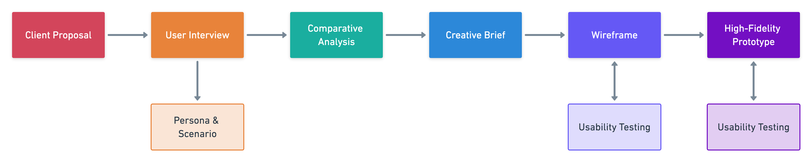 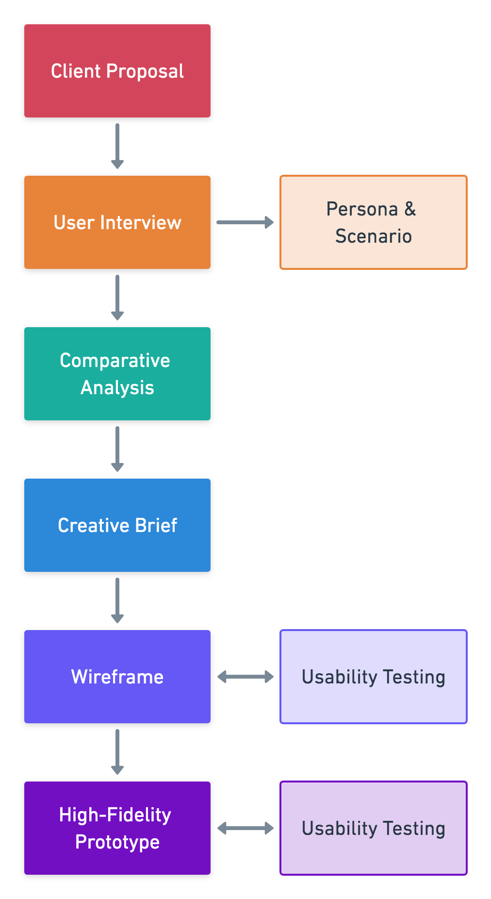Client Proposal

We had a conversation with the president of CDC and other two board members. Below are our main takeaways:
- The ultimate goal of the website is to attract more incoming freshmen to join CDC. The website is used as a medium that records the journey that CDC has been through. Also, our clients want to include recruitment information and easier access for audiences to buy tickets.
- Before the conversation, we assumed that Fusheng Chinese Drama Troupe is the only competitor of CDC. To our surprise, our client considers other Chinese organizations, like Chinese Union (CU) and Chinese Students and Scholars Association (CSSA), as the main competitors, since these organizations are the most popular among Chinese students at UC San Diego and can attract a large number of Chinese students to join them or participate in their events.
- People used to perceive CDC as being ancient, oriental, and feminine. Our client wants to eliminate these misunderstanding and to rebrand CDC to be modern, vital, and professional on the official website.
Target User
User Interview
We had 9 participants for our user interviews. There is a great diversity in terms of their relations with CDC, academic backgrounds, school years, and interests. Some of them are part of CDC; some are Freshmen who are looking for students organizations to join; some are CDC audiences. Through the interviews, we have a more comprehensive understanding of the target users.
Persona
Based on user interviews, we created three personas.
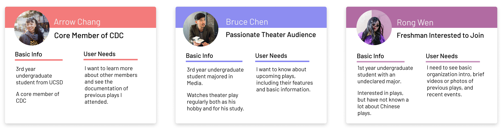 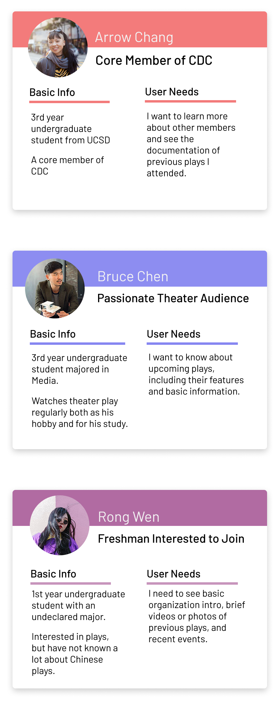Use Case & Scenario
Starting with 3 personas, we came up with 2 scenarios for each persona and 5 use cases for each scenario, which is 30 use cases in total. From the 30 use cases, we were able to identify the most common use cases and thus the most important features of the website.
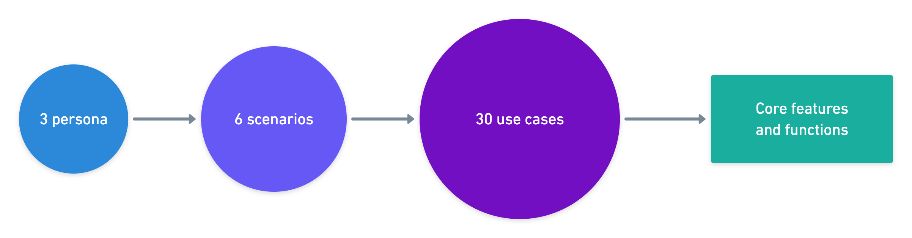 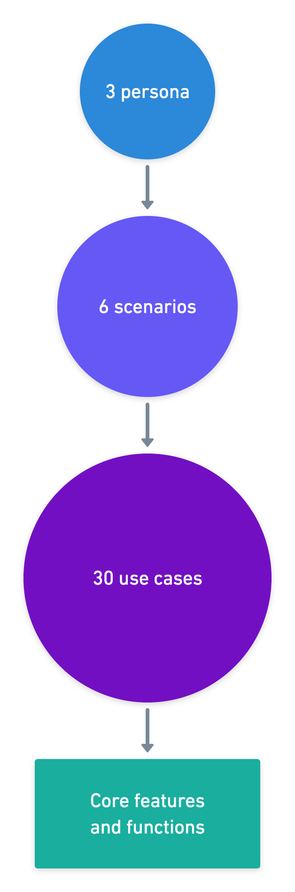Competitive Analysis
We in-depth analysis of 5 competitors, including two popular Chinese student organizations (Chinese Union and Chinese Students and Scholars Association) and three theater-related organizations (UC San Diego Theatre & Dance, San Diego Musical Theatre, and Muir Musical). For each competitor, we carefully looked into its website and analyzed its branding, functionality, and site architecture. We also found several other organization websites that are nicely designed for inspiration.
Main Takeaways:
- Visually, it is a good idea to have a photo occupy the whole screen on the homepage. Too much content on the homepage will be overwhelming, especially on mobile version.
- It is nice to have more photos and less texts. Even if there are long paragraphs, we should highlight important information.
Creative Brief
In this step, we created a document that summarizes all we had gained from previous steps and our initial design ideas. It includes content, navigation, functions, client's objectives, audience's objectives, and tone. The creative brief helped us to have a clearer understanding of what we wanted to achieve and we were going to do.
Paper Sketch
We created a paper sketch to visualize our creative brief. It efficiently shows the site architecture, content, and some creative design ideas. For instance, we decided to have a timeline on the homepage, and photos of plays on the timeline are automatically played like a slide show. And this idea is reflected on the sketch.
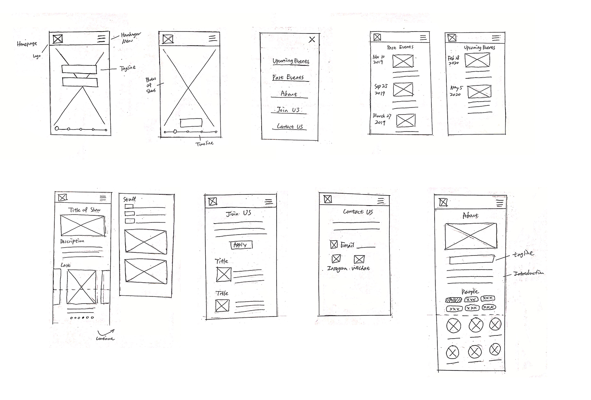Usability Testing
From the low-fidelity prototype to the final high-fidelity one, we constantly conducted usability tests to improve our design. Here are some important changes we made.
Homepage
Users’ first impression is crucial, and the homepage is responsible to deliver the right messages about the organization concisely and immediately. Our users pointed out that the huge logo on the first page is repetitive and the photos of plays are confusing. We changed the huge logo to the trailer of an upcoming play and replaced the photos of plays with something that can better represent CDC as a drama club.
 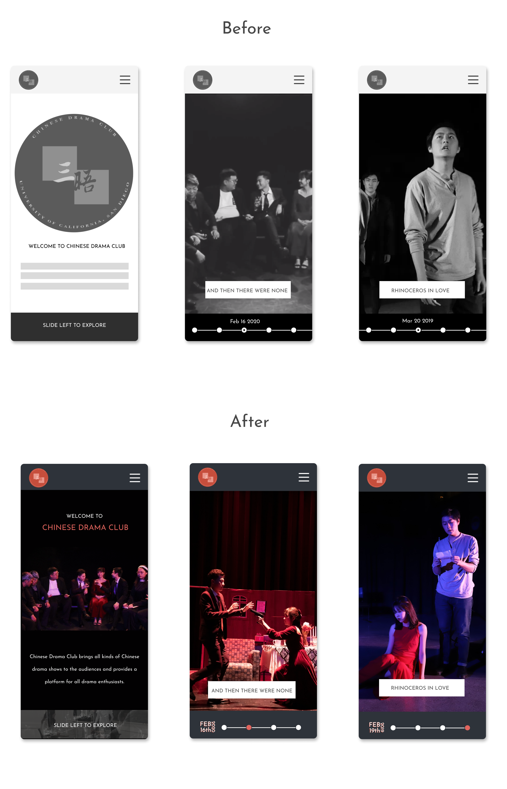
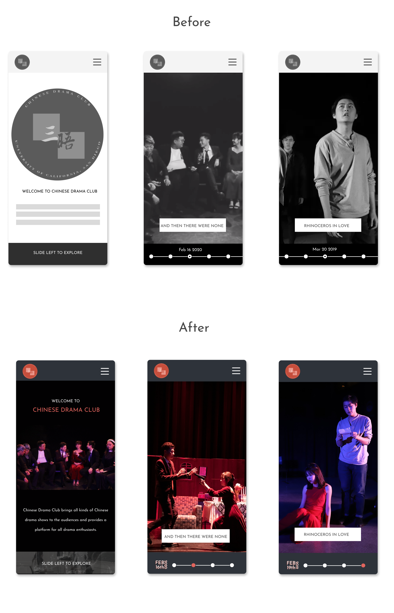
Upcoming/Past Events
One of the hardest parts was the arrangement of information on the pages of upcoming events and past events. There is so much information on these pages. At first, we were not sure about which information is more important than the others. But through several user tests on the high-fidelity prototypes and feedback from the client, we gained a clearer understanding of the hierarchy of information on these pages. Thus, for the final design, we prioritized information of tickets, location, and time on upcoming event pages. We also placed photos at the top part of both upcoming and past event pages. And instead of having all photos spread out, we decided to fold the photos and have users swipe to see more photos. According to our user tests, photos are attractive and useful, but if they occupy so much space, the page will be too long to use
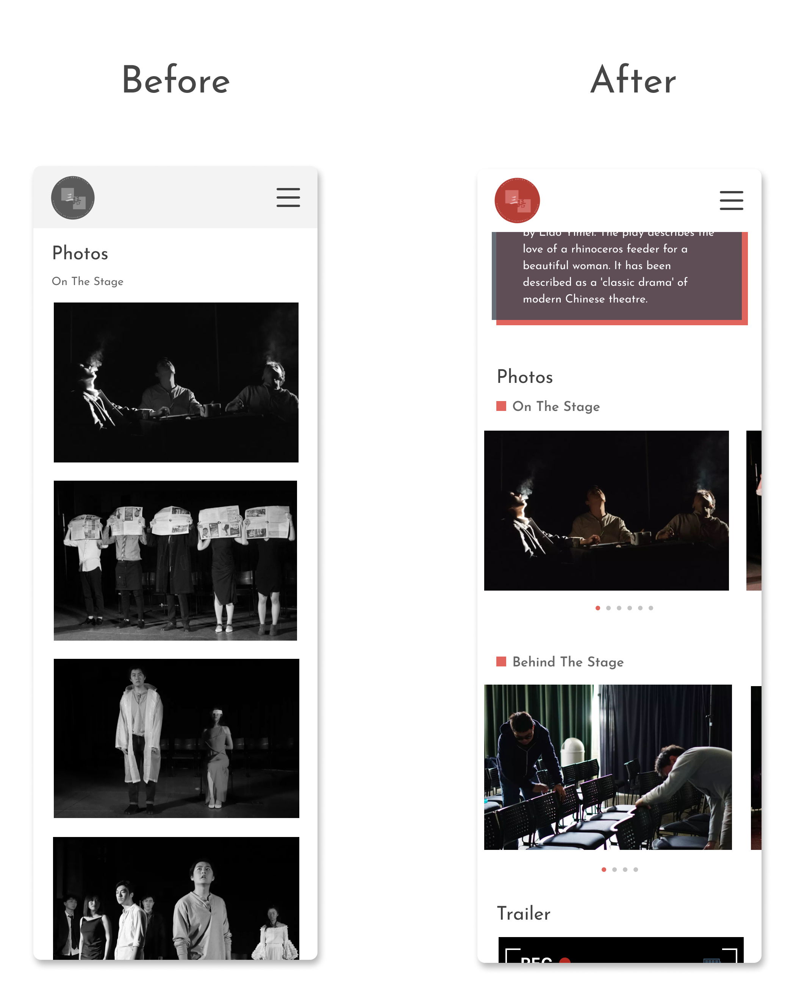Recruitment
On the recruitment page, we used to have all position descriptions spread out. However, during user testing, we noticed that the hierarchy is unclear and that the page is too long for users. Thus, we decided to hide descriptions under position titles to make this page more concise.
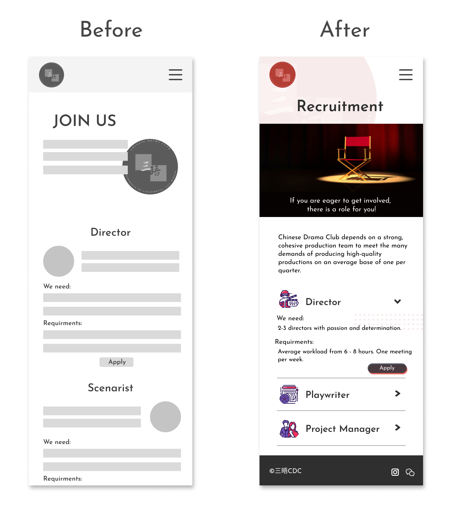Visual Design
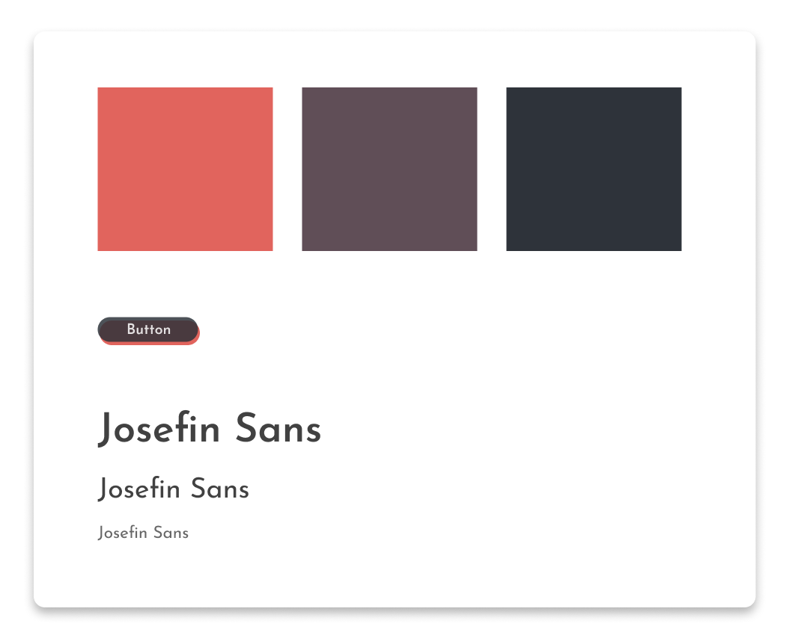Our goal is to showcase CDC’s personality as being vital, modern, and professional. Requested by our client, we kept the original logo and chose red as the main color. We were very meticulous about the quality of photos, since we wanted the photos to tell the stories about CDC. Because the photos all have vivid colors, rather than widely applying the main color, we only use our main color to decorate and highlight some details. We selected Josefin Sans as our font, since it looks modern and vital.
Feature Highlights

Easy access to featured plays via photos and trailers

Clear timeline of all events with posters and introductions

Concise and visually-driven documentation for each play
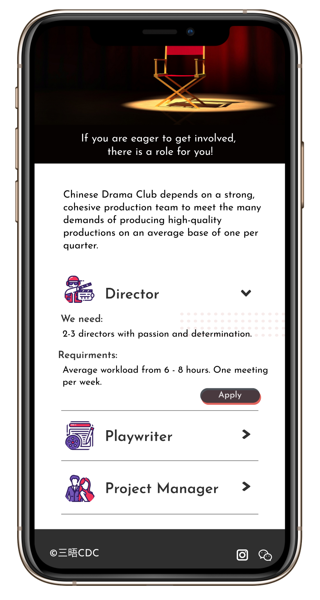Descriptions of current openings and easy way to apply
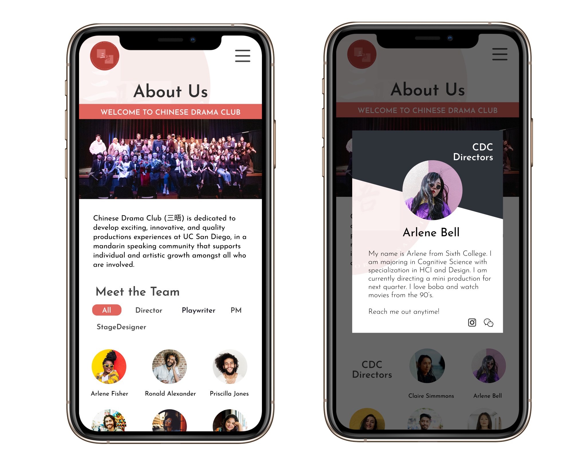Self-introduction and contact of each member
Takeaways
It was a valuable experience to design a website for a real client in collaboration with other three designers. Inevitably, we had disagreements with our client sometimes. I realized that user testing is an efficient tool to resolve the disagreement. Through user testing, we can clearly see if a feature successfully contributes the ultimate goal. It is an objective way of making decisions and dealing with disagreement. Also, creating personas and summarizing user cases and scenarios are very useful. They helped to decide which feature or function is going to be used the most often and which is less important. For most of my previous design projects, there were usually only one or two designers, so it was also challenging for me to work in a team of four designers. We all have our unique taste, mindsets and approaches to solve problems. When we had some conflicting ideas, we learned to solve them in a more objective way, such as through user testing and voting.


© 2020 Jiayu Luo.